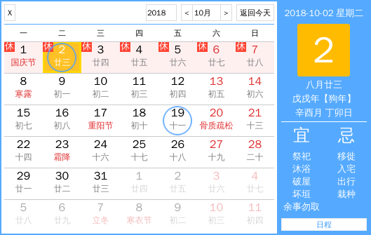
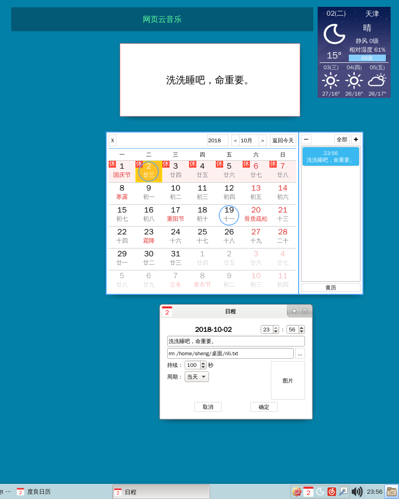
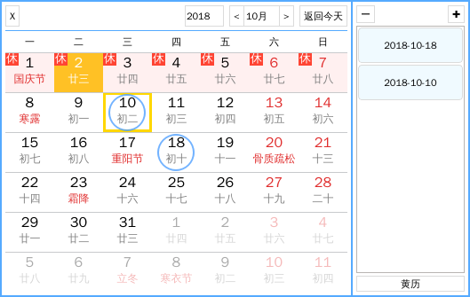
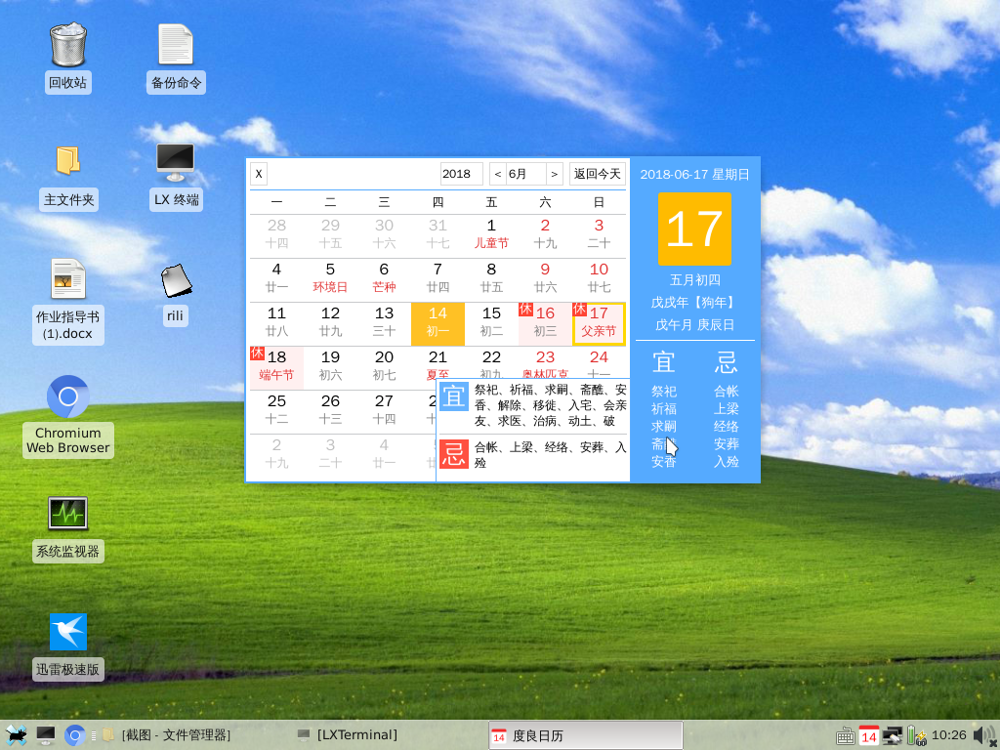

度良日历V1.0 18.10.03_00:28:54项目地址：https://github.com/noahsai/rili 18.10.03 优化了节假日加载逻辑，侧栏数据加载逻辑 终于增加了日程提醒功能。 日程功能使用： 1.有日程的日期会有蓝色圈标记。 2.双击日期会弹出新建日程对话框，双击或侧栏的日程会弹出修改日程对话框。 3.点击侧栏“日程“可查看当前日期日程，点击”黄历“返回黄历节面 4.点击”全部“显示全部拥有日程的日期，双击可查看该日具体日程。 日程种类： 1.当天。 2.每年。 3.每月。 4.每几天。 日程设置： 1.日期不可手动修改，需要改日期只需要直接在日历里点击该日期，无需关闭设置节目，直接点击即可。 2.时间手动调整时和分，可用滚轮，但是时和分不能互动。 3.日程事件随意填写，但不能换行，建议简短提醒。 4.铃声和命令： a.如果填写的是音乐文件，那提醒时就是该音乐作为铃声。 b.如果填写的是命令或可执行文件，那将尝试执行该命令或程序，但是铃声提醒照样会响！。不保证能都运行，只简单测试了一下。 5.持续时间，铃声提示的持续时间。最大600s。 6.周期：当天，每年，每月，数日。数日最大可设置366 7.图片：选填项，默认空，最好选择120x150或该比例的的图片。



//============================ 搬运百度网页的日历 数据，界面样式均照搬百度的。 如果提示缺少qml，就安装 qtdeclarative5-*dev 说一下我写的所有的qt软件的编译方法： 方法一，安装qt环境，qtcreator，直接用qtcreator打开编译即可。 方法二，安装qt环境，在代码的目录下新建一个文件夹，然后 qmake .. （记住 qmake后面 一个空格 再两个“..”） 接着 make 即可。  |